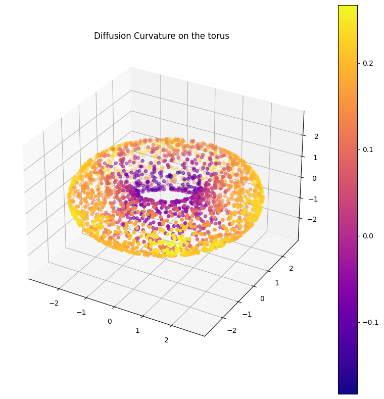

from diffusion_curvature.datasets import torus
import graphtools
X_torus, torus_gaussian_curvature = torus(n=5000)
G_torus = graphtools.Graph(X_torus, anisotropy=1, knn=30)Diffusion Curvature
Fast, pointwise graph curvature
Diffusion curvature is a pointwise extension of Ollivier-Ricci curvature, designed specifically for the often messy world of pointcloud data. Its advantages include:
- Unaffected by density fluctuations in data: it inherits the diffusion operator’s denoising properties.
- Fast, and scalable to millions of points: it depends only on matrix powering - no optimal transport required.
Install
It’s not yet available via PyPI. In the meantime, you can run:
pip install git+git://github.com/professorwug/diffusion_curvature@masterUsage
To compute diffusion curvature, first create a graphtools graph with your data. Graphtools offers extensive support for different kernel types (if creating from a pointcloud), and can also work with graphs in the PyGSP format. We recommend using anistropy=1, and verifying that the supplied knn value encompasses a reasonable portion of the graph.
Next, instantiate a DiffusionCurvature operator.
from diffusion_curvature.graphtools import DiffusionCurvature
DC = DiffusionCurvature(t=12)DiffusionCurvature
DiffusionCurvature (t:int, distance_type='PHATE', use_entropy:bool=False, **kwargs)
Initialize self. See help(type(self)) for accurate signature.
| Type | Default | Details | |
|---|---|---|---|
| t | int | Number of diffusion steps to use when measuring curvature. TODO: Heuristics | |
| distance_type | str | PHATE | |
| use_entropy | bool | False | If true, uses KL Divergence instead of Wasserstein Distances. Faster, seems empirically as good, but less proven. |
| kwargs |
And, finally, pass your graph through it. The DiffusionCurvature operator will store everything it computes – the powered diffusion matrix, the estimated manifold distances, and the curvatures – as attributes of your graph. To get the curvatures, you can run G.ks.
G_torus = DC.curvature(G_torus, dimension=2)plot_3d(X_torus, G_torus.ks, colorbar=True, title="Diffusion Curvature on the torus")